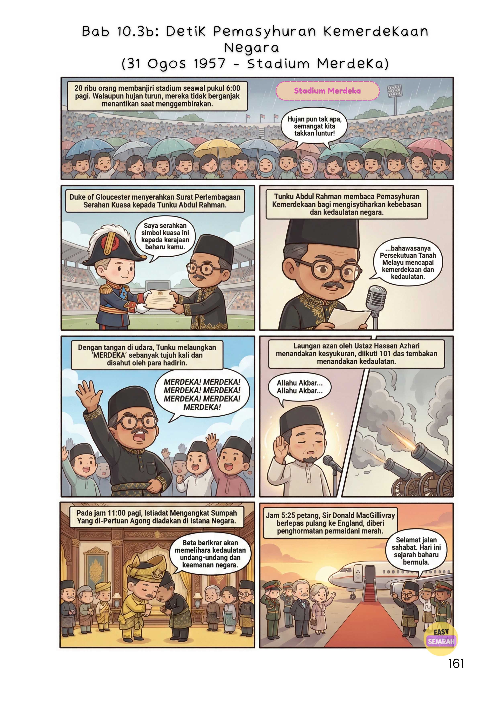

🌙 Padang Kelab Selangor☀️ Stadium Merdeka🎖️ Tunku Abdul Rahman💥 101 Das Meriam
Setiap tahun, bila dah masuk bulan Ogos, semua orang excited pasal cuti. 😄 Tapi jujur, berapa ramai yang tahu apa sebenarnya berlaku pada malam 30 Ogos dan pagi 31 Ogos 1957? Bukan sekadar bendera naik dan lagu berkumandang. Ada air mata. Ada debaran. Ada rakyat yang sanggup berjalan kaki dari jauh semata-mata nak ada di sana. Jom kita "kembali" ke tahun 1957.
🌙 Malam Keramat, Padang Kelab Selangor, 30 Ogos 1957
Bayangkan KL pada malam tu.
Jalan-jalan sesak. Kereta, bas, beca, semua penuh. Ada yang sanggup berjalan kaki. Lampu hiasan berkelip-kelip sehingga lewat malam. Semua orang nak ada di sana. Nak witness sejarah dengan mata sendiri.
⏱️ Kronologi Malam Bersejarah
🕙
10:00 malam
Wakil Parti Perikatan mula ambil tempat. Semua berbaju Melayu hitam, segak gila. Diketuai oleh Sardon Jubir.
🪖
10:30 malam
300 orang pemuda berbaris hormat di tengah padang, menghadap Jalan Raja. Di bawah pimpinan Ismail Bontak.
🌑
11:58 malam
Tiba-tiba, semua lampu dipadamkan. Gelap gelita. Ribuan orang berdiri dalam kegelapan. Senyap. Semua orang tahu, dalam 2 minit lagi, Malaysia bukan lagi tanah jajahan.
🇲🇾
12:00 tengah malam
Lampu menyala semula, serentak dengan bunyi jam besar yang bergema. Bendera Union Jack diturunkan perlahan oleh Tahir Abdul Majid. Lagu God Save The Queen dimainkan buat kali terakhir. Kemudian, buat pertama kalinya dalam sejarah, bendera Persekutuan Tanah Melayu dinaikkan dengan megah. Lagu Negaraku berkumandang. Rakyat spontan bersorak. Tangis haru bercampur gembira. Bukan cuma bendera yang naik, maruah bangsa pun naik sama.
Malam tu juga, Tunku Abdul Rahman dikalungkan rantai emas oleh Sardon Jubir, diikuti laungan "Bapa Kemerdekaan Tanah Air" sebanyak tiga kali. Majlis ditutup dengan bacaan doa selamat oleh Tuan Haji Massood Hayati.

Ilustrasi dari e-komik EasySejarah — Bab 10.3b: Detik Pemasyhuran Kemerdekaan Negara
🎨
Nak faham detik Kemerdekaan lagi dalam dan lagi visual?
Kalau malam tadi penuh emosi, pagi ni pulak penuh dengan istiadat yang gilang-gemilang.
Seawal jam 6 pagi, ribuan rakyat dah membanjiri stadium. Hujan turun. Tapi tak seorang pun berganjak. Sebab ini bukan sebarangan pagi.
Bayangkan visual ni: Raja-raja Melayu, Yang di-Pertuan Agong, dan wakil Queen Elizabeth II iaitu Duke of Gloucester, duduk di pentas. Biduanda berdiri tegap dengan payung diraja berwarna-warni. Megah gila.
🎖️ Upacara Rasmi
Duke of Gloucester menyerahkan Surat Perlembagaan Serahan Kuasa kepada Tunku Abdul Rahman secara rasmi.
Lepas tu, tepat jam 8:15 pagi, Tunku Abdul Rahman membaca Pemasyhuran Kemerdekaan.
⚡ Laungan Rasmi Kemerdekaan — 31 Ogos 1957, 8:15 Pagi
Tujuh kali. Disambut penuh kedaulatan oleh rakyat pelbagai bangsa.
Lepas tu suasana bertukar sayu. Laungan azan oleh Ustaz Hassan Azhari berkumandang. Diikuti tembakan meriam 101 das.
💥
101 das meriam.
Dengan 101 das tu, Persekutuan Tanah Melayu rasmi menjadi negara merdeka yang berdaulat. Bayangkan bunyi tu bergema seluruh KL.
🔍 Fun Facts: Benda Yang Kamu Mungkin Tak Tahu
Kemerdekaan ni tak datang bergolek. Ada banyak behind-the-scenes yang menarik.
🏟️
Stadium MerdekaDireka oleh S. E. Jewkes dari JKR. Siap dalam 6 bulan je. Kos: RM2.5 juta. 22,000 tempat duduk. Kalau sekarang? Entah berapa billion dah.
🎵
Lagu NegarakuBerasal dari irama lagu Terang Bulan, lagu negeri Perak. Lirik ditulis oleh Saiful Bahari. Unique kan, lagu kebangsaan kita ada origin story yang ramai tak tahu.
🚩
Bendera PersekutuanDireka oleh Mohamed Hamzah dari JKR Johor. Tapi tau tak, bendera ni sebenarnya dah dikibarkan secara rasmi pada 26 Mei 1950 di Istana Sultan Selangor. Jauh sebelum merdeka lagi!
🏳️
75,000 BenderaSemua ditempah khas dari kilang kain di Jepun dan dibawa dengan kapal laut. Ya, ironi tu memang wujud.
🌺
Bunga RayaTunku Abdul Rahman sendiri yang pilih Bunga Raya sebagai bunga kebangsaan, selepas tinjau pendapat rakyat melalui Kementerian Pertanian.
👘
Baju MuskatPakaian rasmi menteri dan pegawai kerajaan masa tu, baju "muskat" dari negeri Kedah, adalah ilham Tunku sendiri.
💭 Kenapa Kita Perlu Ambil Tahu?
Kemerdekaan kita lain dari negara lain.
Kita tak merdeka melalui perang. Tak melalui pertumpahan darah besar-besaran. Tapi melalui kebijaksanaan pemimpin dan semangat permuafakatan rakyat pelbagai kaum.
Itu yang buat kemerdekaan kita unik. Dan itu jugalah yang buat kita kena jaga ia baik-baik.
🇲🇾
Jiwa Merdeka bukan cuma pasal cuti umum.
Ia pasal menghargai apa yang nenek moyang kita bina dengan susah payah. Generasi kita yang kena pastikan ia kekal.
💡 Soalan KBAT — Cuba Jawab!
Kemerdekaan Tanah Melayu dicapai melalui rundingan, bukan perjuangan bersenjata. Pada pendapat kamu, apakah kelebihan dan cabaran cara ini berbanding perjuangan bersenjata seperti yang dilakukan oleh negara-negara lain?
🎬 Nak Belajar Lagi dengan EasySejarah?
Tonton video-video sejarah yang seronok di saluran YouTube kami. Percuma untuk semua pelajar Malaysia!